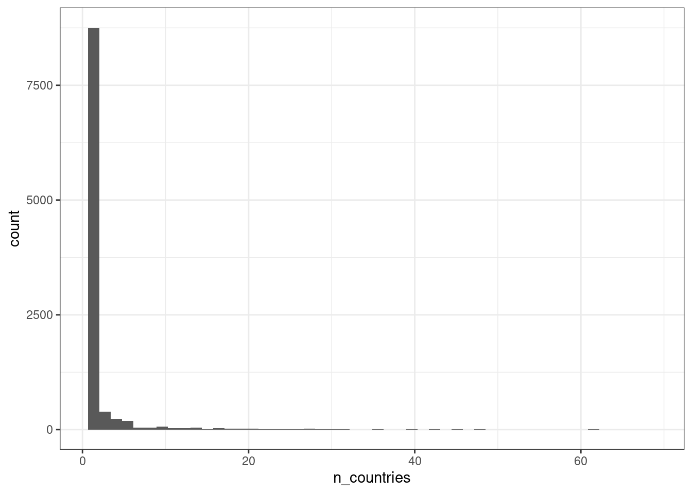

Ahora continuaremos usando el dataset de las plantas para sacar datos considerando agrupaciones. Por ejemplo podemos estimar cuántas veces aparece una canción entre las top 50.
data[,.N,by = name]
name N
<char> <int>
1: Die With A Smile 1145
2: BIRDS OF A FEATHER 5515
3: Taste 674
4: Espresso 6972
5: Who 1965
---
13332: Tsiou 2
13333: Mexri Telous 2
13334: Virtuální drogy 2
13335: AMBIENTE ERRADO - Ao Vivo 2
13336: Oficializar - Ao Vivo 2
Se pueden usar múltiples factores en las agrupaciones. Por ejemplo, cuantas veces aparece una canción de su album particular por pais.
Genera una tabla en la que calcules el número de paises en el que un album estuvo en el top 50
Haz una gráfica para visualizar los resultados
Respuesta

Agrupación por expresión
El espacio by también nos permite formar los grupos directamente de una expresión. Por ejemplo, si quisieramos contar el número de canciones en cada pais que tienen una popularidad mayor a 80.
country PopAbove80 N
<char> <lgcl> <int>
1: TRUE 14869
2: FALSE 1138
3: ZA FALSE 10786
4: ZA TRUE 5244
5: VN TRUE 2622
6: VN FALSE 13634
Ejercicio
Calcula cuántas veces una canción ha sido ranqueada como la número 1 (para cualquier pais). Muestra las 5 canciones que hayan tenido el ranking 1 más veces.
Respuesta
name num1 N
<char> <lgcl> <int>
1: LUNA TRUE 1015
2: Who TRUE 624
3: i like the way you kiss me TRUE 570
4: Si Antes Te Hubiera Conocido TRUE 531
5: La Diabla TRUE 505
Cadenas de operaciones
Una función muy importante del paquete es la capacidad de encadenar operaciones en un mismo comando sin necesidad de guardar el resultado en algun objeto.
Es una función que se puede entender de manera similar al uso del pipe %>% o |> en tidyverse o rbase. En data table se pueden evaluar una serie de expresiones una después de la otra escribiendolas entre corchetes de esta manera:
DT[ ... ][ ... ][ ... ]
o de forma vertical
DT[ ...
][ ...
][ ...
]
Por ejemplo, recapitulando temas anteriores ¿cómo contarías el número de paises en los que una canción ha estado en el top 50?
data[,.N, by = .(name,country)][,.(ncountry = .N), by = name]
name ncountry
<char> <int>
1: Die With A Smile 61
2: BIRDS OF A FEATHER 62
3: Taste 49
4: Espresso 62
5: Who 48
---
13332: Tsiou 1
13333: Mexri Telous 1
13334: Virtuální drogy 1
13335: AMBIENTE ERRADO - Ao Vivo 1
13336: Oficializar - Ao Vivo 1
En realidad los corchetes consecutivos es una funcionalidad que viene desde R base. Por ejemplo, podemos seleccionar las primeras 10 filas del df data y después seleccionar las primeras dos.
as.data.frame(data)[1:10,][1:2,]
spotify_id name artists daily_rank daily_movement weekly_movement country
1 2plbrEY59IikOBgBGLjaoe Die With A Smile Lady Gaga, Bruno Mars 1 0 0
2 6dOtVTDdiauQNBQEDOtlAB BIRDS OF A FEATHER Billie Eilish 2 0 0
snapshot_date popularity is_explicit duration_ms album_name album_release_date danceability energy key
1 2024-09-08 97 FALSE 251667 Die With A Smile 2024-08-16 0.521 0.592 6
2 2024-09-08 100 FALSE 210373 HIT ME HARD AND SOFT 2024-05-17 0.747 0.507 2
loudness mode speechiness acousticness instrumentalness liveness valence tempo time_signature
1 -7.777 0 0.0304 0.308 0.0000 0.122 0.535 157.969 3
2 -10.171 1 0.0358 0.200 0.0608 0.117 0.438 104.978 4